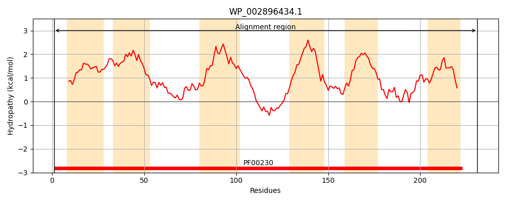
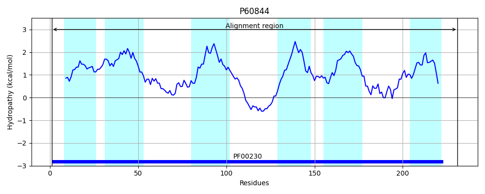
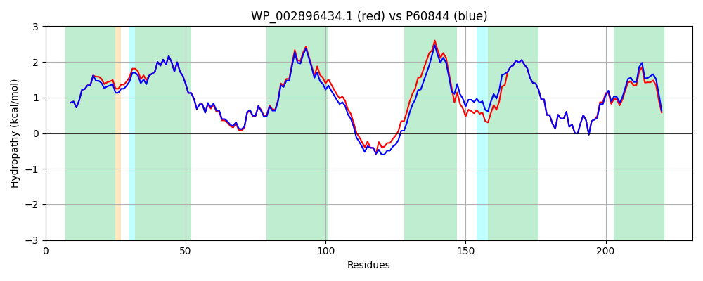

Hit Accession: P60844
Hit TCID: 1.A.8.3.1
Hit Description: gnl|BL_ORD_ID|11132 gnl|TC-DB|P60844|1.A.8.3.1 Aquaporin Z - Escherichia coli.
Mach Len: 231
e:0.000000
Query TMS Count : 6
Hit TMS Count: 6
TMS-Overlap Score: 6.050000
Predicted Substrates:CHEBI:5585;water
BLAST Alignment:
Score: 1120 , Bit scores: 436 bits, E-value: 8.4e-158, Alignment length: 231, Percentage identity: 90
Query: 1 MFRKLAAECFGTFWLVFGGCGSAVLAAAFPELGIGFAGVALAFGLTVLTMAFAVGHISGGHFNPAVTLGLWAGGRFPAKEVIGYIIAQVVGGIIAAAVLYVVASGKAGFDAAASGFASNGYGEHSPGGFSMLSAIVIEIVLTCGFLLVIHGATDKHAPAGFAPIAIGLALTLIHLISIPVTNTSVNPARSTAVAIFQGGWALQQLWLFWVMPIVGGILGGVLYRTLLEKRD 231
MFRKLAAECFGTFWLVFGGCGSAVLAA FPELGIGFAGVALAFGLTVLTMAFAVGHISGGHFNPAVT+GLWAGGRFPAKEV+GY+IAQVVGGI+AAA+LY++ASGK GFDAAASGFASNGYGEHSPGG+SMLSA+V+E+VL+ GFLLVIHGATDK APAGFAPIAIGLALTLIHLISIPVTNTSVNPARSTAVAIFQGGWAL+QLW FWV+PIVGGI+GG++YRTLLEKRD
Sbjct: 1 MFRKLAAECFGTFWLVFGGCGSAVLAAGFPELGIGFAGVALAFGLTVLTMAFAVGHISGGHFNPAVTIGLWAGGRFPAKEVVGYVIAQVVGGIVAAALLYLIASGKTGFDAAASGFASNGYGEHSPGGYSMLSALVVELVLSAGFLLVIHGATDKFAPAGFAPIAIGLALTLIHLISIPVTNTSVNPARSTAVAIFQGGWALEQLWFFWVVPIVGGIIGGLIYRTLLEKRD 231 | Protein Hydropathy Plots: |
|---|
|  |  |
Pairwise Alignment-Hydropathy Plot:
|
|---|
|  |